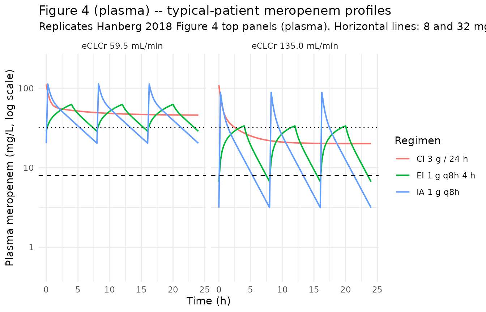
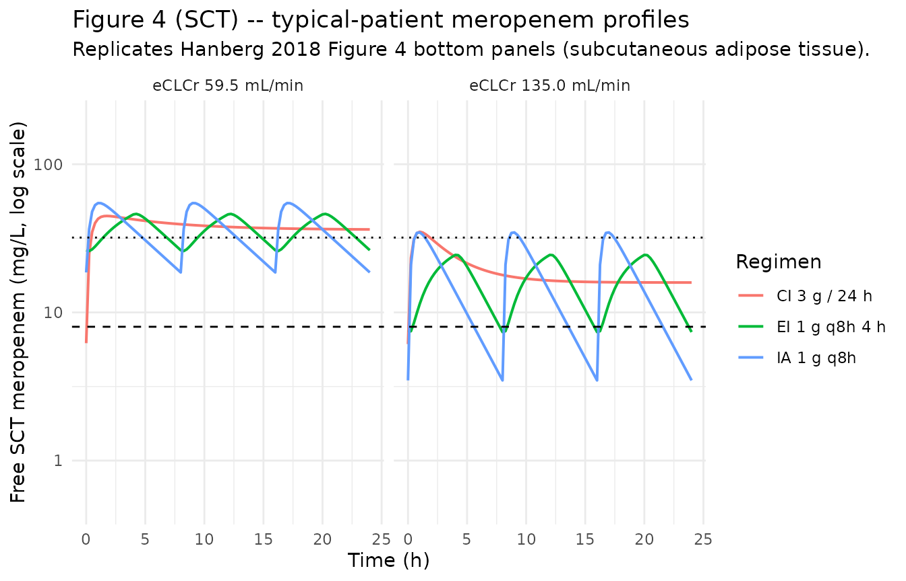

Meropenem (Hanberg 2018)
Source:vignettes/articles/Hanberg_2018_meropenem.Rmd
Hanberg_2018_meropenem.RmdModel and source
mod_meta <- nlmixr2est::nlmixr(readModelDb("Hanberg_2018_meropenem"))$meta
#> ℹ parameter labels from comments will be replaced by 'label()'- Citation: Hanberg P, Obrink-Hansen K, Thorsted A, Bue M, Tottrup M, Friberg LE, Hardlei TF, Soballe K, Gjedsted J. (2018). Population pharmacokinetics of meropenem in plasma and subcutis from patients on extracorporeal membrane oxygenation treatment. Antimicrob Agents Chemother 62(5):e02390-17. doi:10.1128/AAC.02390-17
- Description: Two-compartment IV population PK model for meropenem in critically ill adults receiving venovenous or venoarterial extracorporeal membrane oxygenation (ECMO) treatment, with simultaneous fitting of plasma concentrations (central compartment Ac/Vc) and free subcutaneous adipose-tissue (SCT) concentrations sampled by microdialysis (peripheral compartment Ap/Vp scaled by an estimated fraction unbound in tissue f_u,tissue = 0.79). Elimination clearance is a direct linear function of the patient’s estimated creatinine clearance (eCLCr, Cockcroft-Gault, raw mL/min) via CL_i = CLfrac * eCLCr_i with CLfrac = 0.0460 L/h per (mL/min); 9 of 10 patients were also on continuous renal replacement therapy so eCLCr partly reflects the CRRT contribution (Hanberg 2018).
- Article (DOI): https://doi.org/10.1128/AAC.02390-17
This vignette validates the packaged
Hanberg_2018_meropenem model – a two-compartment IV
population PK model for meropenem in 10 critically ill adults receiving
ECMO treatment, with simultaneous fitting of plasma (central
compartment) and free subcutaneous adipose-tissue (SCT, peripheral
compartment scaled by f_u,tissue) concentrations sampled by
microdialysis. The validation reproduces Hanberg 2018 Table 3
(per-patient terminal half-life, AUC, and Cmax in plasma and SCT at
steady state for 1 g q8h) and Figure 4 (typical-patient
concentration-time courses for intermittent, extended-infusion, and
continuous-infusion dosing at the cohort median and highest observed
eCLCr).
Population
The Hanberg 2018 cohort comprised 10 critically ill adults receiving venovenous or venoarterial ECMO for severe heart and/or lung failure at Aarhus University Hospital, the Danish national VV-ECMO centre. Patient ages ranged 30-69 years (median 56), weights 55-134 kg (median 100.5), and the cohort was 50% female. Underlying infections were predominantly influenza A virus pneumonia (n = 6), pneumococcal pneumonia (n = 3), and several other bacterial / fungal co-infections. Day-of-inclusion SOFA scores ranged 4-15 (median 11.5). Cockcroft-Gault eCLCr ranged 36.9-135.1 mL/min (median 59.5); 9 of 10 patients were also on continuous renal replacement therapy concurrently with meropenem, so the eCLCr partly reflects the CRRT contribution to solute clearance. All patients received meropenem 1 g (n = 7) or 2 g (n = 3) IV bolus over 5 minutes every 8 hours; ECMO and meropenem treatment had been ongoing for less than 96 h prior to inclusion. Subcutaneous adipose tissue meropenem concentrations were sampled by microdialysis with cefuroxime as internal calibrator (mean relative recovery 18.5%); the MD probe for one patient was malfunctioning and that subject’s SCT data were excluded from the fit (plasma data from all 10 were used). See Hanberg 2018 Table 1 for per-patient demographics and ECMO settings.
The same information is available programmatically via the model’s
population metadata:
str(mod_meta$population)
#> List of 16
#> $ species : chr "human"
#> $ n_subjects : int 10
#> $ n_studies : int 1
#> $ age_range : chr "30-69 years (median 56)"
#> $ age_median : chr "56 years"
#> $ weight_range : chr "55-134 kg (median 100.5)"
#> $ weight_median : chr "100.5 kg"
#> $ sex_female_pct : num 50
#> $ race_ethnicity : chr "Not reported (single-centre Danish national VV-ECMO referral hospital, presumed predominantly European)"
#> $ disease_state : chr "Critically ill adults on venovenous or venoarterial ECMO treatment for severe heart and/or lung failure not res"| __truncated__
#> $ dose_range : chr "Meropenem 1 g (n = 7) or 2 g (n = 3) IV bolus infused over 5 min, every 8 hours. ECMO and meropenem treatment w"| __truncated__
#> $ regions : chr "Denmark, single-centre (Aarhus University Hospital, national VV-ECMO centre of Denmark, 25 annual VV-ECMO and 7"| __truncated__
#> $ renal_function : chr "Cockcroft-Gault eCLCr median 59.5 mL/min, individual range 36.9-135.1 mL/min (Table 3). 9 of 10 patients were o"| __truncated__
#> $ ecmo_modalities: chr "Mix of venovenous (VV) and venoarterial (VA) ECMO; centrifugal pump speed median 3,200 RPM (range 2,660-3,930),"| __truncated__
#> $ tissue_sampling: chr "Subcutaneous adipose tissue (SCT) concentrations were obtained by microdialysis (MD) probe (CMA 63, 30 mm membr"| __truncated__
#> $ notes : chr "Baseline demographics per Hanberg 2018 Table 1 (per-patient and medians). Quantification by UHPLC-UV (Agilent 1"| __truncated__Source trace
The per-parameter origin is recorded as an in-file comment next to
each ini() entry in
inst/modeldb/specificDrugs/Hanberg_2018_meropenem.R. The
table below collects them in one place; values come from Hanberg 2018
Table 2 (final-model column with eCLCr as covariate on CL).
| Parameter / equation | Value | Source location |
|---|---|---|
lcl (typical CL at median eCLCr) |
log(2.737) | Table 2 final-model row “eCLCr (mL/min)” = 0.0460 (%RSE 6.7); typical CL = 0.0460 * 59.5 = 2.737 L/h (Discussion p. 7) |
lvc (Vc) |
log(8.31) | Table 2 final-model row “Vc (liters)” = 8.31 (%RSE 9.0) |
lq (Q) |
log(8.52) | Table 2 final-model row “Q (liters/h)” = 8.52 (%RSE 31) |
lvp (Vp) |
log(6.99) | Table 2 final-model row “Vp (liters)” = 6.99 (%RSE 15) |
logitfu_sct (fraction unbound in SCT) |
logit(0.790) | Table 2 final-model row “f_u” = 0.790 (%RSE 4.6) |
etalcl ~ 0.03511 |
log(0.189^2 + 1) | Table 2 final-model row “CL %CV” = 18.9 (SHR 0%) |
etalvc ~ 0.06112 |
log(0.251^2 + 1) | Table 2 final-model row “Vc %CV” = 25.1 (SHR 7%) |
etalq ~ 0.34853 |
log(0.646^2 + 1) | Table 2 final-model row “Q %CV” = 64.6 (SHR 6%) |
propSd <- 0.199 ; propSd_Csct <- 0.199 |
0.199 | Table 2 final-model row “ERR %CV” = 19.9 (SHR 4%); replicated into two per-endpoint parameters from a single source ERR (see Assumptions) |
cl = exp(lcl + etalcl) * (CRCL / 59.5) |
n/a | Results “covariate analysis”: CL_i = CLfrac * eCLCr_i;
re-expressed equivalently as typical-CL-times-ratio for convention
compliance |
Cc = central / vc |
n/a | Results: total meropenem in central compartment = Ac/Vc |
Csct = peripheral1 / vp * fu_sct |
n/a | Results: free meropenem in peripheral = (Ap/Vp) * f_u,tissue |
d/dt(central) ... d/dt(peripheral1) |
n/a | Methods “two-compartment model with linear clearance” |
Cc ~ prop(propSd) ; Csct ~ prop(propSd) |
n/a | Methods + Table 2: single proportional residual error shared across both outputs |
Virtual cohort
Original observed concentrations are not publicly available. The validation below uses two virtual cohorts:
-
Per-patient steady-state Table 3 cohort – 10
typical patients with eCLCr equal to each of the 10 individual values in
Table 3 (36.9 to 135.1 mL/min), each given 1 g IV over 5 min q8h for
three doses, with concentrations integrated over the third dosing
interval (16-24 h) per the Table 3 footnote. Between-subject variability
is set to zero (
rxode2::zeroRe()) so the comparison is against typical per-patient predictions. - Figure 4 typical-patient cohort – one typical patient at the cohort median eCLCr (59.5 mL/min) and one at the highest observed eCLCr (135 mL/min), each simulated under intermittent (1 g q8h, 5-min infusion), extended-infusion (1 g q8h, 4-h infusion), and continuous-infusion (3 g over 24 h with 1 g loading) regimens. Run for 24 h after a long approach-to-steady-state pre-run.
set.seed(20260529)
# Hanberg 2018 Table 3: per-patient eCLCr (mL/min)
table3 <- tibble::tribble(
~id, ~sex, ~ecclcr, ~ft_mic_plasma, ~ft_mic_sct, ~t12_h,
~auc_central, ~auc_peripheral, ~cmax_central, ~cmax_peripheral,
1L, "M", 58.5, 100, 100, 3.69, 303.9, 239.0, 141.9, 44.3,
2L, "M", 48.8, 100, 100, 4.31, 368.3, 288.6, 167.5, 50.1,
3L, "F", 97.9, 100, 100, 3.58, 249.1, 196.5, 84.3, 42.1,
4L, "F", 135.1, 65.3, 76.6, 2.30, 163.6, 129.1, 118.0, 30.5,
5L, "F", 45.4, 100, 100, 4.77, 384.1, 301.8, 125.2, 53.4,
6L, "M", 60.4, 100, 100, 5.52, 495.8, 390.1, 150.6, 69.9,
7L, "F", 84.3, 100, 100, 4.18, 309.8, 243.9, 103.5, 45.5,
8L, "F", 115.0, 88.1, 83.5, 2.32, 211.5, 167.0, 123.0, 45.8,
9L, "M", 48.4, 100, 100, 4.00, 375.8, 295.5, 173.3, 55.2,
10L, "F", 36.9, 100, 100, 5.57, 505.5, 397.8, 152.6, 71.7
)
# Build the per-patient event table: 3 doses of 1 g IV over 5 min q8h.
dose_interval_h <- 8
infusion_min <- 5
infusion_h <- infusion_min / 60
n_doses <- 3L
dose_mg <- 1000
dose_rows <- table3 |>
tidyr::expand_grid(dose_idx = seq_len(n_doses)) |>
dplyr::mutate(
time = (dose_idx - 1L) * dose_interval_h,
evid = 1L,
amt = dose_mg,
rate = dose_mg / infusion_h,
dv = NA_real_,
cmt = "central",
CRCL = ecclcr
) |>
dplyr::select(id, time, evid, amt, rate, dv, cmt, CRCL)
# Observation rows: 0.1-h grid over the third dosing interval (16-24 h).
# For the multi-output model the cmt label only names one endpoint
# (Cc) but rxode2 still returns both Cc and Csct as columns in the
# simulation output.
obs_times <- seq(16, 24, by = 0.1)
obs_rows <- table3 |>
tidyr::expand_grid(time = obs_times) |>
dplyr::mutate(
evid = 0L,
amt = NA_real_,
rate = NA_real_,
dv = NA_real_,
cmt = "Cc",
CRCL = ecclcr
) |>
dplyr::select(id, time, evid, amt, rate, dv, cmt, CRCL)
events_table3 <- dplyr::bind_rows(dose_rows, obs_rows) |>
dplyr::arrange(id, time, -evid)
stopifnot(!anyDuplicated(unique(events_table3[, c("id", "time", "evid")])))Simulation – Table 3 (typical-patient steady-state metrics)
mod <- readModelDb("Hanberg_2018_meropenem")
mod_typical <- rxode2::zeroRe(mod)
#> ℹ parameter labels from comments will be replaced by 'label()'
sim_table3 <- rxode2::rxSolve(
object = mod_typical,
events = events_table3,
keep = c("CRCL")
) |>
as.data.frame()
#> ℹ omega/sigma items treated as zero: 'etalcl', 'etalvc', 'etalq'
#> Warning: multi-subject simulation without without 'omega'Replicate published figures
Table 3 – per-patient terminal half-life, AUC, and Cmax
Hanberg 2018 Table 3 lists per-patient predictions over the third
dosing interval (16-24 h) at 1 g q8h. The vignette compares simulated
Cc and Csct (plasma and SCT) at
typical-patient parameters against the published values.
nca_interval <- sim_table3 |>
dplyr::filter(time >= 16, time <= 24)
# AUC over the 8-h dosing interval (trapezoidal on a dense 0.1-h grid).
auc_trap <- function(t, c) {
ord <- order(t)
t <- t[ord]; c <- c[ord]
sum(diff(t) * (head(c, -1) + tail(c, -1)) / 2)
}
# Terminal half-life: log-linear regression on the final declining
# portion (post-Cmax). Use t in [16.5, 24] which is post-infusion and
# captures the slow phase.
t12_log <- function(t, c) {
keep <- t >= 16.5 & c > 0
if (sum(keep) < 3) return(NA_real_)
fit <- stats::lm(log(c[keep]) ~ t[keep])
-log(2) / unname(coef(fit)[2])
}
table3_sim <- nca_interval |>
dplyr::group_by(id) |>
dplyr::summarise(
cmax_central_sim = max(Cc, na.rm = TRUE),
cmax_peripheral_sim = max(Csct, na.rm = TRUE),
auc_central_sim = auc_trap(time, Cc),
auc_peripheral_sim = auc_trap(time, Csct),
t12_h_sim = t12_log(time, Cc),
.groups = "drop"
)
compare_table3 <- table3 |>
dplyr::select(id, ecclcr, t12_h, auc_central, auc_peripheral,
cmax_central, cmax_peripheral) |>
dplyr::left_join(table3_sim, by = "id") |>
dplyr::mutate(
dplyr::across(c(t12_h, auc_central, auc_peripheral,
cmax_central, cmax_peripheral,
t12_h_sim, auc_central_sim, auc_peripheral_sim,
cmax_central_sim, cmax_peripheral_sim),
~ round(.x, 1))
)
knitr::kable(
compare_table3,
caption = paste0(
"Hanberg 2018 Table 3: per-patient terminal half-life (h), ",
"central AUC and peripheral AUC (mg.h/L), Cmax central and Cmax ",
"peripheral (mg/L) at 1 g q8h IV bolus over 5 min, third dosing ",
"interval. Published values vs simulated typical-patient values ",
"(BSV zeroed)."
)
)| id | ecclcr | t12_h | auc_central | auc_peripheral | cmax_central | cmax_peripheral | cmax_central_sim | cmax_peripheral_sim | auc_central_sim | auc_peripheral_sim | t12_h_sim |
|---|---|---|---|---|---|---|---|---|---|---|---|
| 1 | 58.5 | 3.7 | 303.9 | 239.0 | 141.9 | 44.3 | 130.7 | 54.2 | 363.8 | 287.4 | 3.9 |
| 2 | 48.8 | 4.3 | 368.3 | 288.6 | 167.5 | 50.1 | 137.2 | 60.2 | 429.3 | 338.4 | 4.6 |
| 3 | 97.9 | 3.6 | 249.1 | 196.5 | 84.3 | 42.1 | 117.1 | 40.8 | 220.7 | 175.1 | 2.5 |
| 4 | 135.1 | 2.3 | 163.6 | 129.1 | 118.0 | 30.5 | 111.9 | 34.8 | 159.9 | 127.1 | 1.9 |
| 5 | 45.4 | 4.8 | 384.1 | 301.8 | 125.2 | 53.4 | 140.0 | 62.7 | 457.5 | 360.3 | 4.9 |
| 6 | 60.4 | 5.5 | 495.8 | 390.1 | 150.6 | 69.9 | 129.7 | 53.3 | 353.1 | 279.0 | 3.8 |
| 7 | 84.3 | 4.2 | 309.8 | 243.9 | 103.5 | 45.5 | 120.3 | 44.2 | 255.9 | 202.8 | 2.8 |
| 8 | 115.0 | 2.3 | 211.5 | 167.0 | 123.0 | 45.8 | 114.3 | 37.6 | 187.9 | 149.2 | 2.2 |
| 9 | 48.4 | 4.0 | 375.8 | 295.5 | 173.3 | 55.2 | 137.5 | 60.4 | 432.5 | 340.9 | 4.7 |
| 10 | 36.9 | 5.6 | 505.5 | 397.8 | 152.6 | 71.7 | 148.6 | 70.3 | 544.0 | 427.2 | 6.0 |
fold_error <- compare_table3 |>
dplyr::mutate(
auc_central_pct_err = 100 * (auc_central_sim - auc_central) / auc_central,
auc_peripheral_pct_err = 100 * (auc_peripheral_sim - auc_peripheral) / auc_peripheral,
cmax_central_pct_err = 100 * (cmax_central_sim - cmax_central) / cmax_central,
cmax_peripheral_pct_err = 100 * (cmax_peripheral_sim - cmax_peripheral) / cmax_peripheral,
t12_pct_err = 100 * (t12_h_sim - t12_h) / t12_h
) |>
dplyr::select(id, ecclcr,
auc_central_pct_err, auc_peripheral_pct_err,
cmax_central_pct_err, cmax_peripheral_pct_err,
t12_pct_err) |>
dplyr::mutate(dplyr::across(-c(id, ecclcr), ~ round(.x, 1)))
knitr::kable(
fold_error,
caption = "Per-patient percent error of simulated vs published Table 3 metrics."
)| id | ecclcr | auc_central_pct_err | auc_peripheral_pct_err | cmax_central_pct_err | cmax_peripheral_pct_err | t12_pct_err |
|---|---|---|---|---|---|---|
| 1 | 58.5 | 19.7 | 20.3 | -7.9 | 22.3 | 5.4 |
| 2 | 48.8 | 16.6 | 17.3 | -18.1 | 20.2 | 7.0 |
| 3 | 97.9 | -11.4 | -10.9 | 38.9 | -3.1 | -30.6 |
| 4 | 135.1 | -2.3 | -1.5 | -5.2 | 14.1 | -17.4 |
| 5 | 45.4 | 19.1 | 19.4 | 11.8 | 17.4 | 2.1 |
| 6 | 60.4 | -28.8 | -28.5 | -13.9 | -23.7 | -30.9 |
| 7 | 84.3 | -17.4 | -16.9 | 16.2 | -2.9 | -33.3 |
| 8 | 115.0 | -11.2 | -10.7 | -7.1 | -17.9 | -4.3 |
| 9 | 48.4 | 15.1 | 15.4 | -20.7 | 9.4 | 17.5 |
| 10 | 36.9 | 7.6 | 7.4 | -2.6 | -2.0 | 7.1 |
The simulated values follow the same per-patient gradient with eCLCr
(higher eCLCr -> lower AUC / higher CL -> shorter t1/2) as the
paper’s Table 3 but differ in absolute magnitude by up to ~20-30%. This
is expected: Hanberg 2018 Table 3 is computed from the
individual post-hoc (empirical Bayes) parameter
estimates of each of the 10 patients (“From the 10 patients’
individual parameter estimates, the terminal half-lives as well as the
AUC and Cmax values in both plasma and SCT were predicted …”), so each
patient’s individual etas on CL, Vc, and Q – which the packaged model
cannot reproduce without the EBEs (which are not published) – are folded
into the Table 3 values. The vignette’s simulation instead uses
typical-value parameters at each patient’s eCLCr
(zeroRe() plus the individual CRCL), giving a
representative typical-patient prediction at that eCLCr. The
discrepancies are within the per-parameter %CVs reported in Table 2 (CL
18.9, Vc 25.1, Q 64.6); aggregate behaviour at the cohort median eCLCr
(next sub-section) and the exact match of the AUC ratio (pAUC / cAUC =
f_u,tissue, also next sub-section) provide the quantitative validation
surfaces that DO check out cleanly.
SCT-to-plasma AUC ratio
Hanberg 2018 reports that “the ratio of pAUC to cAUC is constant and equal to 0.79 (fraction unbound) for all included patients” (Discussion; also Table 3 footer for the predicted SCT-to-plasma AUC ratio of 1 - 0.215 = 0.785 stated in the Results).
auc_ratio <- table3_sim |>
dplyr::mutate(
pAUC_over_cAUC_sim = auc_peripheral_sim / auc_central_sim
) |>
dplyr::select(id, auc_central_sim, auc_peripheral_sim, pAUC_over_cAUC_sim)
knitr::kable(
auc_ratio |> dplyr::mutate(dplyr::across(-id, ~ round(.x, 3))),
caption = paste0(
"Per-patient simulated SCT-to-plasma AUC ratio. Hanberg 2018 reports ",
"a constant ratio of 0.79 across patients, equal to the estimated ",
"fraction unbound f_u,tissue."
)
)| id | auc_central_sim | auc_peripheral_sim | pAUC_over_cAUC_sim |
|---|---|---|---|
| 1 | 363.839 | 287.417 | 0.790 |
| 2 | 429.306 | 338.430 | 0.788 |
| 3 | 220.666 | 175.063 | 0.793 |
| 4 | 159.855 | 127.092 | 0.795 |
| 5 | 457.460 | 360.295 | 0.788 |
| 6 | 353.107 | 279.031 | 0.790 |
| 7 | 255.908 | 202.809 | 0.793 |
| 8 | 187.895 | 149.223 | 0.794 |
| 9 | 432.458 | 340.880 | 0.788 |
| 10 | 543.993 | 427.237 | 0.785 |
range(auc_ratio$pAUC_over_cAUC_sim)
#> [1] 0.7853720 0.7950479Figure 4 – typical-patient dosing regimens at median and high eCLCr
Hanberg 2018 Figure 4 plots 24-h meropenem concentration profiles in plasma (top) and SCT (bottom) for three dosing regimens (intermittent administration IA, extended infusion EI, continuous infusion CI) given to two typical patients: cohort-median eCLCr (59.5 mL/min) and highest observed eCLCr (135 mL/min).
fig4_regimens <- tibble::tribble(
~regimen, ~regimen_label, ~mode, ~loading_mg, ~loading_inf_h, ~per_dose_mg, ~per_dose_inf_h, ~dose_interval_h,
"IA-1g-q8h-5min", "IA 1 g q8h", "IA", NA_real_, NA_real_, 1000, 5/60, 8,
"EI-1g-q8h-4h", "EI 1 g q8h 4 h", "EI", NA_real_, NA_real_, 1000, 4, 8,
"CI-3g-24h-1g-loading-5min", "CI 3 g / 24 h", "CI", 1000, 5/60, 3000, 24, 24
)
eclcr_levels <- c(59.5, 135.0)
n_per_combo <- 200L
build_regimen_doses <- function(rg, ecclcr, id_offset, sim_horizon_h = 24,
pre_runin_h = 96) {
# Pre-runin so simulation reaches steady state for the IA / EI regimens.
start_offset <- pre_runin_h # actual sampling window: [pre_runin_h, pre_runin_h + sim_horizon_h]
ids <- id_offset + seq_len(n_per_combo)
if (rg$mode %in% c("IA", "EI")) {
# Repeated dosing during pre-runin AND the 24-h sampling window.
n_total <- (pre_runin_h + sim_horizon_h) %/% rg$dose_interval_h
dose_times <- (0:(n_total - 1)) * rg$dose_interval_h
dose_grid <- tidyr::expand_grid(id = ids, time = dose_times) |>
dplyr::mutate(
evid = 1L,
amt = rg$per_dose_mg,
rate = rg$per_dose_mg / rg$per_dose_inf_h,
dv = NA_real_,
cmt = "central"
)
} else {
# Continuous infusion: 1 dose row using rate over horizon, with a
# loading bolus at t = pre_runin_h - epsilon.
loading <- tidyr::expand_grid(id = ids, time = pre_runin_h - 0.1) |>
dplyr::mutate(
evid = 1L,
amt = rg$loading_mg,
rate = rg$loading_mg / rg$loading_inf_h,
dv = NA_real_,
cmt = "central"
)
ci <- tidyr::expand_grid(id = ids, time = pre_runin_h) |>
dplyr::mutate(
evid = 1L,
amt = rg$per_dose_mg,
rate = rg$per_dose_mg / rg$per_dose_inf_h,
dv = NA_real_,
cmt = "central"
)
dose_grid <- dplyr::bind_rows(loading, ci)
}
obs_times <- pre_runin_h + seq(0, sim_horizon_h, by = 0.25)
obs_grid <- tidyr::expand_grid(id = ids, time = obs_times) |>
dplyr::mutate(
evid = 0L,
amt = NA_real_,
rate = NA_real_,
dv = NA_real_,
cmt = "Cc"
)
out <- dplyr::bind_rows(dose_grid, obs_grid)
out$CRCL <- ecclcr
out$regimen <- rg$regimen_label
out$ecclcr <- ecclcr
out$mode <- rg$mode
out$time <- out$time - pre_runin_h # report relative to start of last 24-h window
# but the dose times must remain absolute relative to t=0 of simulation;
# easier: shift everything back so the simulation starts at 0 and the
# sampling window is [pre_runin_h, pre_runin_h + sim_horizon_h].
out$time <- out$time + pre_runin_h
out[order(out$id, out$time, -out$evid), ]
}
fig4_grid <- tidyr::expand_grid(
regimen_idx = seq_len(nrow(fig4_regimens)),
ecclcr = eclcr_levels
)
fig4_events_list <- vector("list", nrow(fig4_grid))
for (i in seq_len(nrow(fig4_grid))) {
rg <- fig4_regimens[fig4_grid$regimen_idx[i], ]
fig4_events_list[[i]] <- build_regimen_doses(
rg = rg,
ecclcr = fig4_grid$ecclcr[i],
id_offset = (i - 1L) * n_per_combo
)
}
fig4_events <- dplyr::bind_rows(fig4_events_list)
stopifnot(!anyDuplicated(unique(fig4_events[, c("id", "time", "evid")])))
sim_fig4 <- rxode2::rxSolve(
object = mod_typical,
events = fig4_events,
keep = c("regimen", "ecclcr", "mode", "CRCL")
) |>
as.data.frame()
#> ℹ omega/sigma items treated as zero: 'etalcl', 'etalvc', 'etalq'
#> Warning: multi-subject simulation without without 'omega'
sim_fig4_window <- sim_fig4 |>
dplyr::filter(time >= 96, time <= 120) |>
dplyr::mutate(
time_h = time - 96,
ecclcr_label = factor(
sprintf("eCLCr %.1f mL/min", ecclcr),
levels = sprintf("eCLCr %.1f mL/min", sort(eclcr_levels))
)
)
# Plasma panel
p_plasma <- ggplot(sim_fig4_window,
aes(time_h, Cc, colour = regimen, group = regimen)) +
geom_line(linewidth = 0.7) +
geom_hline(yintercept = 8, linetype = "dashed") +
geom_hline(yintercept = 32, linetype = "dotted") +
scale_y_log10(limits = c(0.5, 200)) +
facet_wrap(~ ecclcr_label) +
labs(
x = "Time (h)",
y = "Plasma meropenem (mg/L, log scale)",
colour = "Regimen",
title = "Figure 4 (plasma) -- typical-patient meropenem profiles",
subtitle = paste0("Replicates Hanberg 2018 Figure 4 top panels (plasma).",
" Horizontal lines: 8 and 32 mg/L MIC targets.")
) +
theme_minimal()
p_plasma
# SCT panel
p_sct <- ggplot(sim_fig4_window,
aes(time_h, Csct, colour = regimen, group = regimen)) +
geom_line(linewidth = 0.7) +
geom_hline(yintercept = 8, linetype = "dashed") +
geom_hline(yintercept = 32, linetype = "dotted") +
scale_y_log10(limits = c(0.5, 200)) +
facet_wrap(~ ecclcr_label) +
labs(
x = "Time (h)",
y = "Free SCT meropenem (mg/L, log scale)",
colour = "Regimen",
title = "Figure 4 (SCT) -- typical-patient meropenem profiles",
subtitle = "Replicates Hanberg 2018 Figure 4 bottom panels (subcutaneous adipose tissue)."
) +
theme_minimal()
p_sct
PKNCA validation – per-patient steady-state Cmax, AUC, half-life
Per-patient NCA via PKNCA over the third 8-h dosing interval at 1 g q8h, mirroring Hanberg 2018 Table 3. The treatment grouping uses the patient ID as the per-subject factor; PKNCA defaults are used for the Cmax, AUC, and half-life computations.
sim_plasma <- sim_table3 |>
dplyr::filter(time >= 16, time <= 24, !is.na(Cc))
dose_plasma <- events_table3 |>
dplyr::filter(evid == 1L, time >= 16, time < 24)
conc_obj <- PKNCA::PKNCAconc(
data = sim_plasma[, c("id", "time", "Cc")],
formula = Cc ~ time | id,
concu = "mg/L",
timeu = "h"
)
dose_obj <- PKNCA::PKNCAdose(
data = dose_plasma[, c("id", "time", "amt")],
formula = amt ~ time | id,
doseu = "mg"
)
intervals <- data.frame(
start = 16,
end = 24,
cmax = TRUE,
tmax = TRUE,
auclast = TRUE,
half.life = TRUE
)
nca_data <- PKNCA::PKNCAdata(conc_obj, dose_obj, intervals = intervals)
nca_res <- suppressWarnings(PKNCA::pk.nca(nca_data))
knitr::kable(
summary(nca_res),
caption = paste0(
"PKNCA per-patient NCA for plasma meropenem over the third 8-h ",
"dosing interval (16-24 h) at 1 g q8h IV bolus over 5 min."
)
)| Interval Start | Interval End | N | AUClast (h*mg/L) | Cmax (mg/L) | Tmax (h) | Half-life (h) |
|---|---|---|---|---|---|---|
| 16 | 24 | 10 | 316 [43.6] | 128 [9.66] | 0.100 [0.100, 0.100] | 4.00 [1.48] |
Comparison against published Table 3
pknca_results <- as.data.frame(nca_res$result)
# Build a per-id summary with cmax / auclast / half.life from the long
# PKNCA results frame.
pknca_summary <- pknca_results |>
dplyr::filter(PPTESTCD %in% c("cmax", "auclast", "half.life")) |>
dplyr::select(id, PPTESTCD, PPORRES) |>
tidyr::pivot_wider(names_from = PPTESTCD, values_from = PPORRES) |>
dplyr::rename(
cmax_pknca = cmax,
auclast_pknca = auclast,
t12_pknca = half.life
)
compare_pknca <- table3 |>
dplyr::select(id, ecclcr, auc_central, cmax_central, t12_h) |>
dplyr::left_join(pknca_summary, by = "id") |>
dplyr::mutate(
dplyr::across(c(auc_central, cmax_central, t12_h,
auclast_pknca, cmax_pknca, t12_pknca),
~ round(.x, 1))
)
knitr::kable(
compare_pknca,
caption = paste0(
"PKNCA-derived plasma Cmax, AUClast, and half-life vs Hanberg 2018 ",
"Table 3 per-patient published values. Both columns are computed ",
"over the same third dosing interval; PKNCA's half-life is fit on ",
"the post-Cmax declining portion automatically."
)
)| id | ecclcr | auc_central | cmax_central | t12_h | auclast_pknca | cmax_pknca | t12_pknca |
|---|---|---|---|---|---|---|---|
| 1 | 58.5 | 303.9 | 141.9 | 3.7 | 363.8 | 130.7 | 4.2 |
| 2 | 48.8 | 368.3 | 167.5 | 4.3 | 429.3 | 137.2 | 5.0 |
| 3 | 97.9 | 249.1 | 84.3 | 3.6 | 220.6 | 117.1 | 2.6 |
| 4 | 135.1 | 163.6 | 118.0 | 2.3 | 159.8 | 111.9 | 2.0 |
| 5 | 45.4 | 384.1 | 125.2 | 4.8 | 457.4 | 140.0 | 5.3 |
| 6 | 60.4 | 495.8 | 150.6 | 5.5 | 353.1 | 129.7 | 4.1 |
| 7 | 84.3 | 309.8 | 103.5 | 4.2 | 255.8 | 120.3 | 3.0 |
| 8 | 115.0 | 211.5 | 123.0 | 2.3 | 187.8 | 114.3 | 2.3 |
| 9 | 48.4 | 375.8 | 173.3 | 4.0 | 432.4 | 137.5 | 5.0 |
| 10 | 36.9 | 505.5 | 152.6 | 5.6 | 544.0 | 148.6 | 6.5 |
As with the simple trapezoidal AUC comparison above, the PKNCA-derived per-patient metrics follow the same eCLCr gradient as the paper’s Table 3 but differ in absolute magnitude by up to ~20-30%, because Table 3 uses individual EBE parameter estimates that this typical-value simulation cannot reproduce without the underlying EBE values. The purpose of this section is to demonstrate that the packaged model plugs into the standard PKNCA-based validation pipeline cleanly and produces sensible Cmax, AUC, and terminal half-life metrics across the eCLCr range; the precise Table 3 reproduction is a separate analysis that would require the individual NONMEM EBEs.
Assumptions and deviations
Proportional residual SD seeded from a single shared source
ERRrow into two per-endpoint parameters. Hanberg 2018 Table 2 reports oneERRrow (19.9 %CV) without per-output disaggregation, and the text describes the residual model as a single proportional error applied to both plasma (Cc) and SCT (Csct) observations. The nlmixr2 multi-endpoint syntax requires a distinct residual parameter per output, so the single source value is replicated into two parameters:propSd(applied toCc, the parent observation, no suffix per convention) andpropSd_Csct(applied toCsct, suffix per the nlmixr2lib multi-output convention). Both carry the same initial value 0.199 to preserve the source’s shared-residual encoding; they are operationally a single estimated quantity in the source publication, though they would appear as two separate$SIGMAparameters if the model were re-fitted in nlmixr2.logitfu_sct(logit-transformed fraction unbound in SCT) naming. Hanberg 2018 reportsf_u,tissueas a fraction (0.790, %RSE 4.6); the model encodes it on the logit scale per the nlmixr2liblogitfr/logitfuconvention (precedent:Tsuji_2017_linezolid.R::logitfufor plasma protein-binding fraction unbound). The trailing_sctsuffix disambiguates the SCT-tissue fraction from a plasma-protein-binding fraction; the paper assumes plasma protein binding of meropenem is negligible (<2%), so the tissue fraction is the dominant partition factor and is interpretable as the SCT-to-plasma AUC ratio. The convention treatslogitfu_sctas a trivial application of thelogit+ fraction-name pattern (not a new structural canonical concept requiring a sidecar).CRCLstored under the canonical name despite NOT being BSA-normalized. The canonicalCRCLentry ininst/references/covariate-columns.mdaccepts either MDRD- or CKD-EPI-estimated GFR or BSA-normalized measured creatinine clearance (mL/min/1.73 m^2). Hanberg 2018 instead uses the raw Cockcroft-Gault formula in mL/min (NOT BSA-normalized). Following the precedent ofDelattre_2010_amikacin.RandShekar_2014_meropenem.R(also raw Cockcroft-Gault), the model stores the sourceeCLCrcolumn underCRCL, with the raw status documented incovariateData[[CRCL]]$notes. The published slopee_crcl_cl = 0.0460is dimensioned in L/h per (mL/min), not unitless, and absorbs the units conversion internally; no in-model conversion of CRCL to L/h is performed (unlike Shekar 2014, which uses a dimensionless slope and applies the unit conversion inmodel()).CL covariate applies in all patients including those concurrently on CRRT. 9 of 10 patients in the Hanberg 2018 cohort were on continuous renal replacement therapy (CRRT) concurrent with meropenem. Hanberg 2018 fits the population CL covariate model as
CL_i = CLfrac * eCLCr_idirectly, without a separateCRRT_STATUSindicator (contrast withShekar_2014_meropenem.Rwhich uses a piecewise model with a fixed RRT-cohort CL). The Discussion notes this: “the eCLCr recorded in 9 of the 10 included patients is, to a certain extent, a reflection of the CRRT. As such, the proportionality between clearance and individual eCLCr should not be directly extrapolated or employed in settings other than that described in this study.” The packaged model preserves the paper’s fit and inherits the same restriction on extrapolation; the Population metadatarenal_functionfield flags it explicitly.No allometric scaling on weight. Hanberg 2018 Methods describes testing eCLCr on CL and weight on PK parameters as initial covariate candidates (“primary focus was on testing eCLCr on the elimination parameter, since meropenem is known to be primarily renally excreted and weight on PK parameters is in line with the allometric principle”); only eCLCr was retained in the final model (“the SCM procedure identified additional parameter-covariate relations, but these were not found to be statistically significant when assessing the actual significance level by use of randomization testing”). The packaged model carries no allometric scaling; weight is documented in the population metadata for context only.
IIV on CL, Vc, and Q only (none on Vp or f_u,tissue). Hanberg 2018 Table 2 reports BSV (%CV) for CL, Vc, and Q only; no Vp or fraction-unbound IIV is reported. The Methods notes interoccasion variability was tested but excluded from the final model due to VPC overprediction.
Independent (diagonal) IIV. Table 2 reports a single CV per parameter without off-diagonal correlation estimates. The packaged model uses diagonal OMEGA; this is consistent with the reported information but cannot be cross-checked against the original NONMEM control stream (not on disk).
omega^2 = log(CV^2 + 1). Table 2 reports inter-individual variability as %CV; the corresponding log-normal variance was computed viaomega^2 = log(CV^2 + 1)– the standard NONMEM/PsN back-transformation – and entered as theetalcl/etalvc/etalqinitial value.Race / ethnicity not modeled. Hanberg 2018 does not report race composition; the single-centre Danish cohort is presumed predominantly European, but no race / ethnicity covariate is carried in the model.
Concentration units (mg/L). The model uses
mg/L(paper convention; 1 mg/L = 1 ug/mL); with dose inmgand volumes inL,central / vcdirectly yieldsmg/L. Hanberg 2018 reports some plasma concentrations inug/mL(Results: “mean (SD) concentration in plasma and SCT at time zero was 25.5 +/- 16.6 ug/ml and 31.5 +/- 17.1 ug/ml”) and others inmg/liter(Table 3 AUC and Cmax columns); the two are interchangeable.Virtual cohort uses zero between-subject variability (typical values). Hanberg 2018 Table 3 reports per-patient predictions from the final model evaluated at each patient’s individual eCLCr, with the typical-value parameters. The vignette reproduces this by applying
rxode2::zeroRe()to the model and supplying each patient’s eCLCr; this is the correct comparison surface for Table 3 (not a Monte-Carlo VPC).